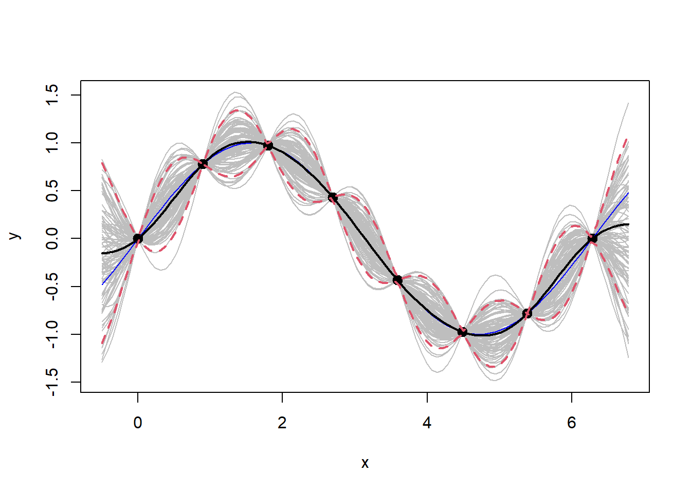

A replication of the Gaussian Process regression implementation lifted from chapter 5 of Surrogates, and an application of the same code to real data.
Create some dummy data being an independent and dependent variable, along with a grid of the independent variable values.
# Training data
n <- 8
X <- matrix(seq(0, 2*pi, length=n), ncol=1) # independent variable
y <- sin(X) # dependent variable
# Predictive grid
XX <- matrix(seq(-0.5, 2*pi + 0.5, length=100), ncol=1)Using inverse exponentiated squared distance.
Note that the first three lines below can be replicated with D <- plgp::distance(X).
D <- dist(X, diag = T, upper = T)
D <- D**2
D <- as.matrix(D) # euclidean distance
eps <- sqrt(.Machine$double.eps) # nugget / jitter
Sigma <- exp(-D) + diag(eps, ncol(D)) # exponentiated squared euclidean distanceCovariance of testing grid data points.
DXX <- as.matrix(dist(XX, diag = T, upper = T)**2) # Is this the same as plgp::dist?
SXX <- exp(-DXX) + diag(eps, ncol(DXX))Covariance between testing grid and training data.
library('plgp')
DX <- plgp::distance(XX, X)
SX <- exp(-DX)Kriging equations, mean mup and variance Sigmap.
Si <- solve(Sigma)
mup <- SX %*% Si %*% y
Sigmap <- SXX - SX %*% Si %*% t(SX)Generate Y values from the posterior/predictive distribution and plot.
YY <- rmvnorm(100, mup, Sigmap)
# Error bars
q1 <- mup + qnorm(0.05, 0, sqrt(diag(Sigmap)))
q2 <- mup + qnorm(0.95, 0, sqrt(diag(Sigmap)))
# Plot
matplot(XX, t(YY), type="l", col="gray", lty=1, xlab="x", ylab="y")
points(X, y, pch=20, cex=2)
lines(XX, sin(XX), col="blue")
lines(XX, mup, lwd=2)
lines(XX, q1, lwd=2, lty=2, col=2)
lines(XX, q2, lwd=2, lty=2, col=2)
The procedures above are now applied to real data, that being stock valuations and fundamentals.
library(romerb)
data("stock_data")
fundamental_raw <- stock_data
rm(stock_data)
# Medical devices sector only
df <- fundamental_raw[fundamental_raw$sector == 7, ]
df$log_mkt_cap <- log(df$mkt_cap)
df$log_book <- log(-df$total_equity_cln)
df <- df[df$date_stamp == as.Date('2021-06-30'), c('log_book','log_mkt_cap','log_pb','roe','leverage')]
# nugget / jitter
eps <- sqrt(.Machine$double.eps)
# Training data
X <- matrix(df$roe)
y <- matrix(df$log_pb)
# Predictive grid
XX <- matrix(seq(min(X), max(X), length=200), ncol=1)D <- plgp::distance(X)
Sigma <- exp(-D) + diag(eps, length(X))
DXX <- plgp::distance(XX)
SXX <- exp(-DXX) + diag(eps, length(XX))
SX <- exp(-distance(XX, sort(X))) # note the sort, required to construct symmetric matrix at Sigmap
# Kriging equations, mean mup and variance Sigmap
Si <- solve(Sigma)
mup <- SX %*% Si %*% y
Sigmap <- SXX - SX %*% Si %*% t(SX)
Sigmap <- sfsmisc::posdefify(Sigmap, method = "allEVadd")
# Generate Y values & error bars from the posterior/predictive distribution
YY <- rmvnorm(100, mup, Sigmap)
q1 <- mup + qnorm(0.05, 0, sqrt(diag(Sigmap)))
q2 <- mup + qnorm(0.95, 0, sqrt(diag(Sigmap)))matplot(XX, t(YY), type="l", col="gray", lty=1, xlab="x", ylab="y")
#points(X, y, pch=20, cex=2)
#lines(XX, sin(XX), col="blue")
lines(XX, mup, lwd=2)
lines(XX, q1, lwd=2, lty=2, col=2)
lines(XX, q2, lwd=2, lty=2, col=2)